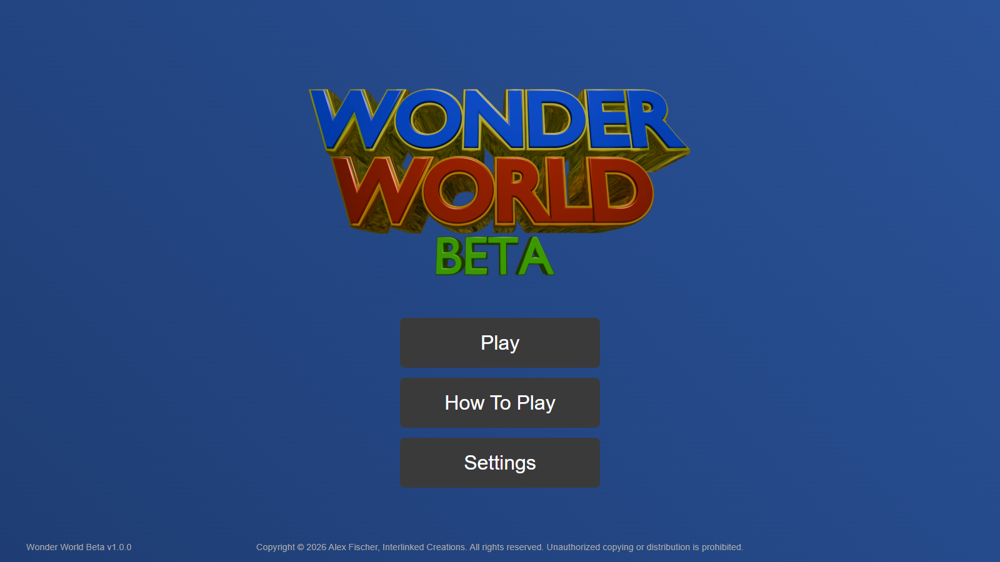
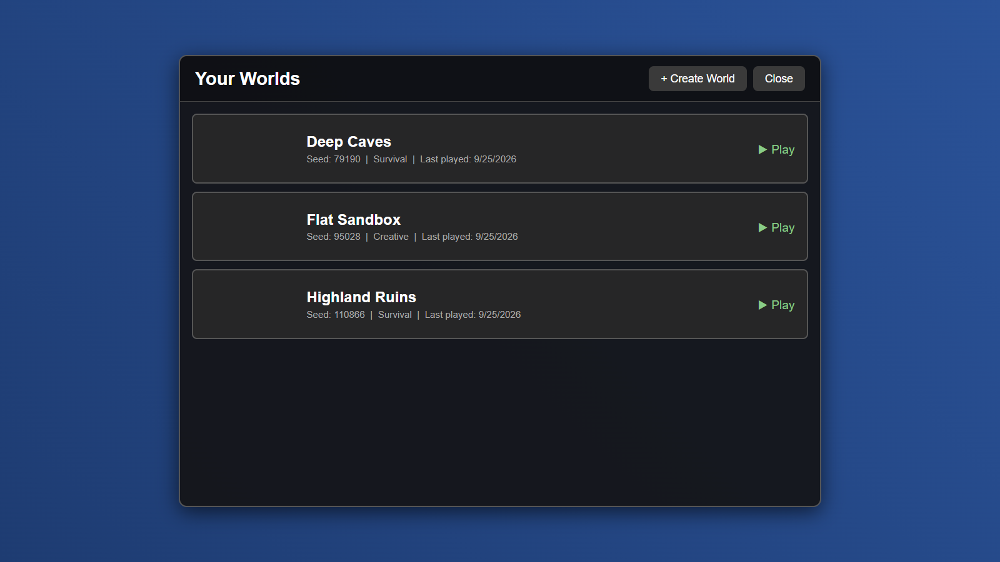
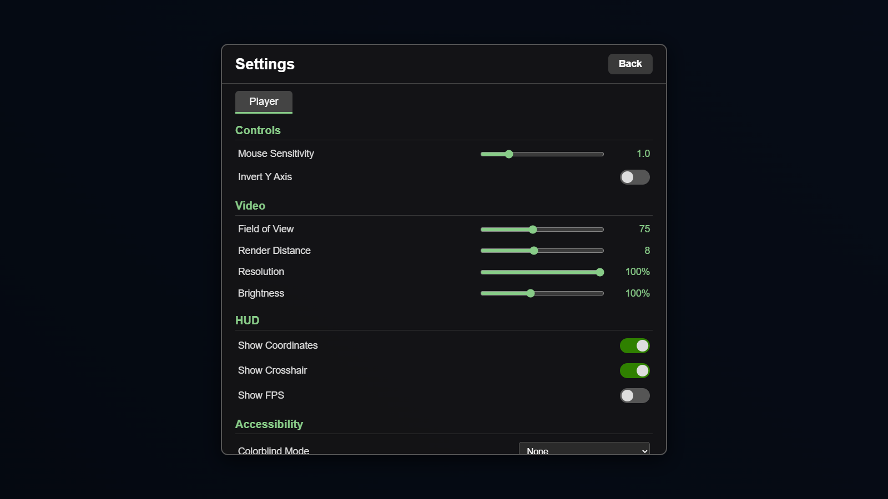
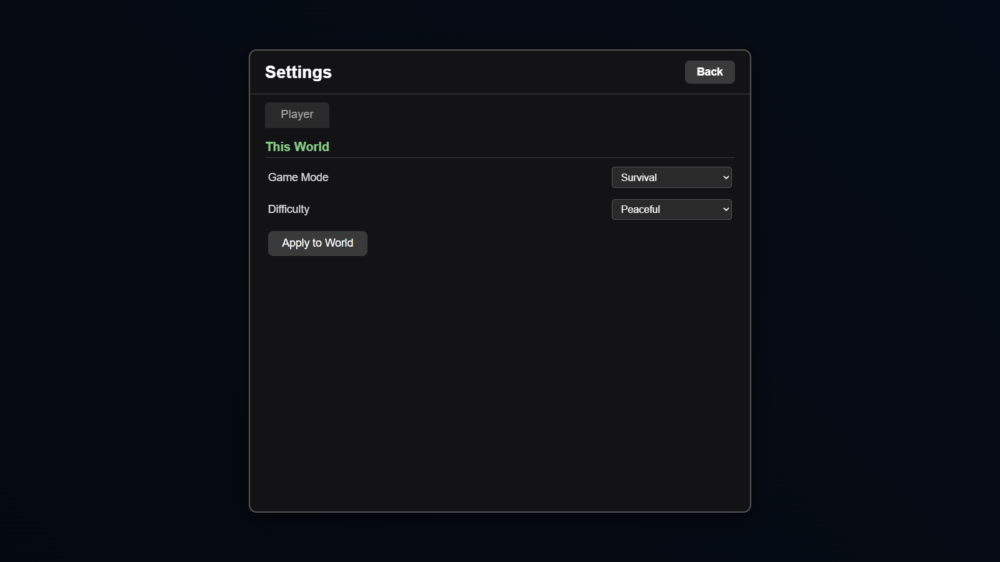
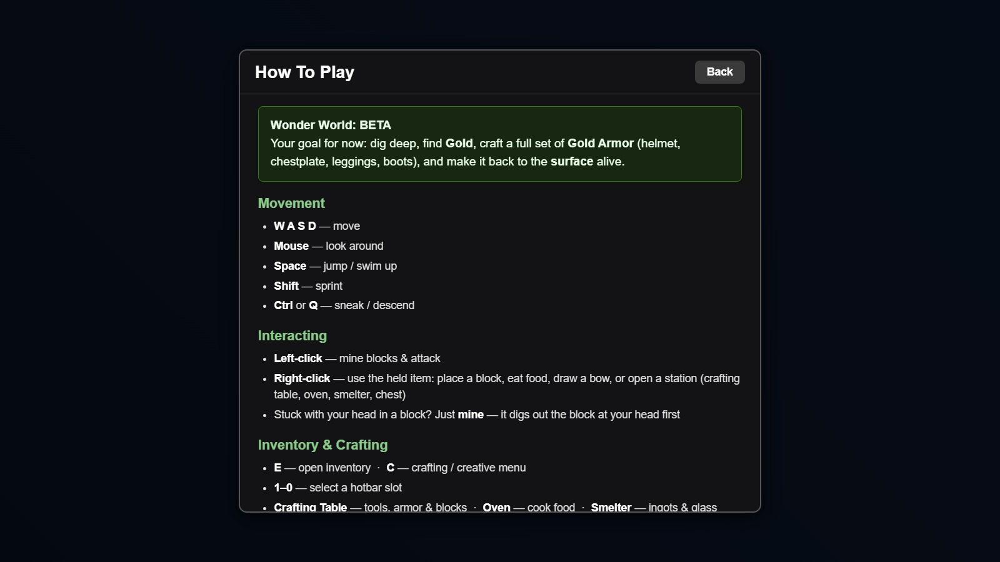
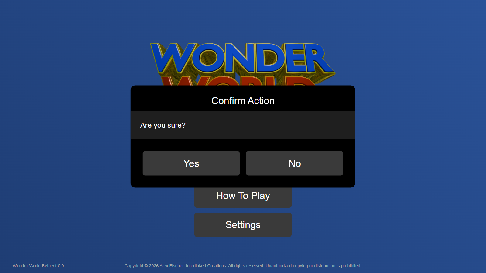
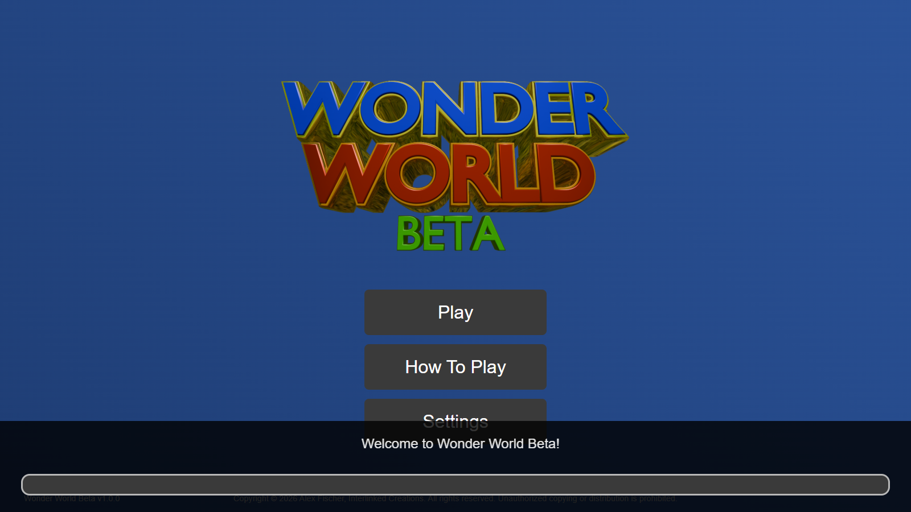
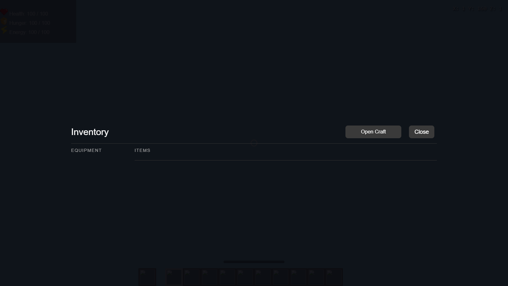
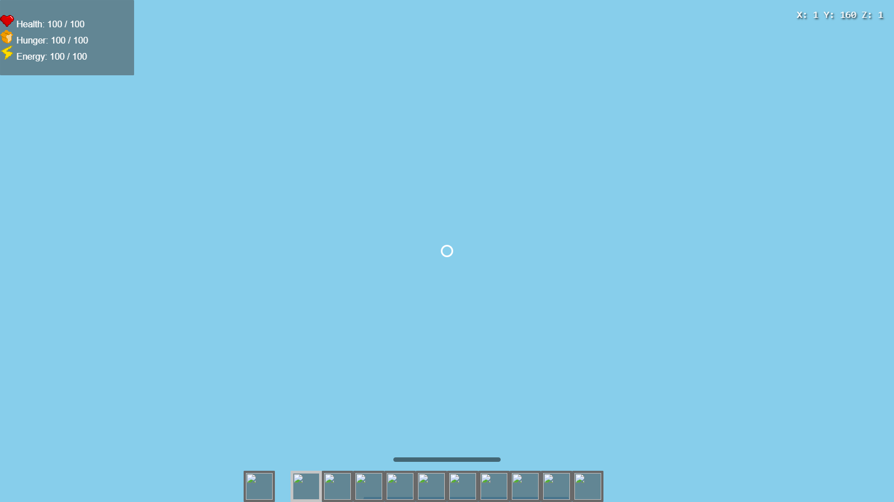
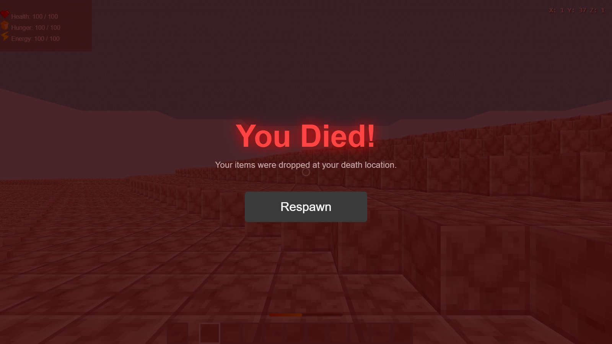

Wonder World UI — captured at 1600×900

01-title — Title screen
 02-world-list — World list
02-world-list — World list

03-create-world — Create world modal
 04-world-detail — World detail modal
04-world-detail — World detail modal

05-settings — Settings — player

06-settings-world — Settings — world tab

07-how-to-play — How to play

08-confirm — Confirm dialog

09-loading — Loading bar
 10-hud — In-game HUD
10-hud — In-game HUD

11-inventory — Inventory

12-pause — Pause menu

13-death — Death screen